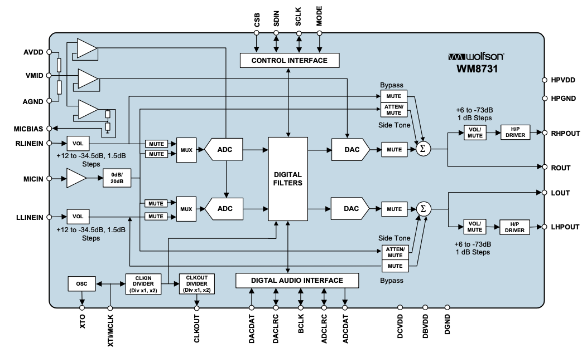
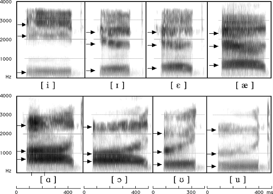

SmallTalk¶
Overview¶
FPGA-accelerated speech recognition using FFT-based feature extraction.
flowchart LR
input@{ shape: circle, label: "input" }
output@{ shape: dbl-circ, label: "output" }
subgraph smalltalk [SmallTalk FPGA]
sw[Embedded CPU]
hw[FFT Hardware]
db[(Reference Words)]
sw --> |frames|hw --> |magnitudes|sw --> |feature vector|db --> |prediction|sw
end
input --> |spoken words|smalltalk --> |prediction|output
SmallTalk implements an embedded speech recognition system that offloads computationally intensive signal processing to an FPGA while retaining flexible control logic on the embedded Nios II soft processor (CPU). Spoken audio is transformed into frequency-domain features using a hardware FFT pipeline, then matched against a small reference dictionary to classify words.
This project explores:
- hardware / software integration
- FPGA acceleration for DSP
- Real-time audio preprocessing and inference
A more in-depth diagram of the hardware/software components:
flowchart TB
input@{ shape: circle, label: "input" }
output@{ shape: dbl-circ, label: "output" }
subgraph smalltalk [SmallTalk]
subgraph hw [Hardware]
fft[FFT]
end
subgraph sw [Software]
adc[ADC]
fb[Frame Buffer]
db[(Ref. Words)]
pred[Predictor]
end
db[(Reference Words)]
end
input --> |spoken words|adc
adc -- amplitudes --> fb -- frame windows --> fft -- magnitudes --> pred -- feature vector --> db -- matching word --> pred
pred --> |prediction|outputResults¶
Warning
todo: not sure the best way to demo results yet...
Key Components¶
Audio Frontend¶
The FPGA features an embeded Nio II soft processor and an on-board WM8731 Audio Codec with an Analog-to-Digital Converter which digitizes the microphone input. Audio preprocessing is thus performed in a software (C++) kernel which maps the microphone's analog signal to a stream of 16b PCM amplitude samples. These samples are then buffered into fixed-size (1024 samples) frames. A Hann windowing function is applied to the audio frames to ensure time-localized frequency analysis.
At this point, a frame of audio is represented as an int16_t frame[1024].
The FFT expects a sequence of complex values,
so frames are converted to std::complex<double> frame[1024].
These complex frames are then fed into the VHDL-defined hardware components that compose the FFT - described in the next section.
Diagram: WM8731 Audio Codec

FFT Accelerator¶
The FFT kernel implements a simple 1024-point radix-2 iterative Cooley-Tukey FFT.
Responsible for mapping time-domain samples to frequency-domain magnitudes,
the hardware-defined FFT offloads the most compute-heavy stage from the CPU,
enabling near real-time processing.
The FFT kernel is composed of two components, namely the FFT Organizer and the
Butterfly Unit.
The FFT organizer is responsible for orchestrating / wiring
together the butterfly units. It divides the input sequence (frame) -
representing an \(N\)-point FFT - into \(\log_{2} N\) stages. Each stage performs a
set of \(\frac{N}{2}\) independent butterfly operations which recombine the
recursive work.
The butterfly units are responsible for computing a butterfly operation
defined by the following equations - using 2 complex adders/subtractors and
1 complex multiplier which maps to about 10 basic arithmetic units depending on
your implementation of the complex multiplier.
Butterfly operation:
where \(w^k_n = e^{-2πk/n}\) represents the twiddle factor. It is important to note that \(e^{-2π/n}\) is a primitive \(n\)th root of 1. Using Euler's roots of unity, we can precompute all such twiddle factors for a given \(N\)-point FFT. These precomputed values are stored in ROM.
1024-point FFT
I use a frame of 1024 samples as input to the FFT.
This creates \(\log_{2} 1024 = 10\) stages.
Each stage has \(\frac{1024}{2} = 512\) butterflies.
Thus, to compute this 1024-point FFT, the organizer must wire together \(10 \cdot 512 = 5120\) butterfly units.
Pseudocode
| Butterfly Unit | |
|---|---|
Feature Extraction¶
flowchart LR
subgraph hw [Hardware]
fft[FFT]
end
subgraph sw [Software]
input@{ shape: processes, label: "Frames" }
output@{ shape: processes, label: "Feature Vectors" }
end
input -- frames --> fft -- raw magnitudes --> outputAfter passing the input signal (audio frames) through the FFT, we obtain the FFT magnitudes which act as a simple spectal representation of spoken words that are robust to timing variations.
In practice, these raw FFT magnitudes are used to compute Mel-filterbank energies or, a step further, to compute MFCCs. However, I chose to simply use the raw FFT magnitudes to analyse the accuracy of such a baseline so that I could evaluate the extent to which the extra compute for MFs or MFCCs translates to increased accuracy.
That is, I use the raw FFT magnitudes as my feature vector.
To illustrate the process so far (i.e., record speech, buffer frames, compute FFT), I recorded myself speaking the english vowels (a, e, i, o, u) and fed it through the pipeline. The resulting plots are shown below.

Top: time-domain plot (stream of amplitude values).
Bottom: frequency-domain plot (windowed FFT magnitudes).
Predictor¶
flowchart LR
output@{ shape: dbl-circ, label: "output" }
subgraph hw [Hardware]
fft[FFT]
end
subgraph sw [Software]
db[(Ref. Words)]
pred[Predictor]
end
fft -- raw magnitudes --> pred -- feature vector --> db -- matching word --> pred --> |prediction|outputThe predictor compares the extracted feature vectors against a reference word database, using distance-based matching (e.g., L2 / cosine similarity), and outputs the closest matching word.
Why FFT for Speech?¶
Human hearing is largely based on characteristics derived from the frequency domain (e.g., pitch, tone, timbre, etc.). Speech signals are more structured in the frequeny-domain where different phonemes and words exhibit different spectral patterns. This makes the FFT-derived features far more discriminative than raw time-domain samples.

Illustration of phonemes spoken by different people (top vs. bottom).
SmallTalk demonstrates the FFT in a practical embedded context.
For a deeper dive into the FFT algorithom, check out my other project,
ParallelFFT, which implements the FFT (in software)
to analyze performance and parallelization.